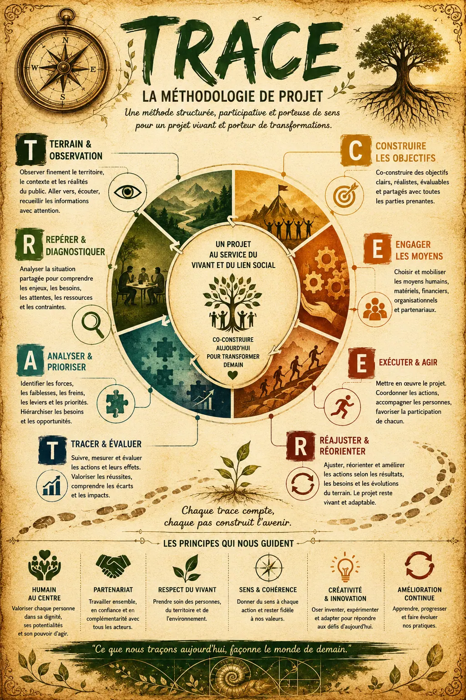

Fiche pédagogique
Conduite de projet participative
Passer du diagnostic à une action construite collectivement.

Repères pour passer à l’action
- Définir le sens — Clarifier le problème, les publics concernés et les changements souhaités.
- Construire avec — Associer les personnes à la définition des objectifs et des modalités.
- Organiser — Répartir les rôles, le calendrier, les moyens, le budget et les responsabilités.
- Agir et documenter — Mettre en œuvre sans perdre de vue les ajustements possibles.
Outil pédagogique de réflexion et d’animation. À adapter aux réalités du terrain, dans le respect des droits, des choix et de la confidentialité des personnes.